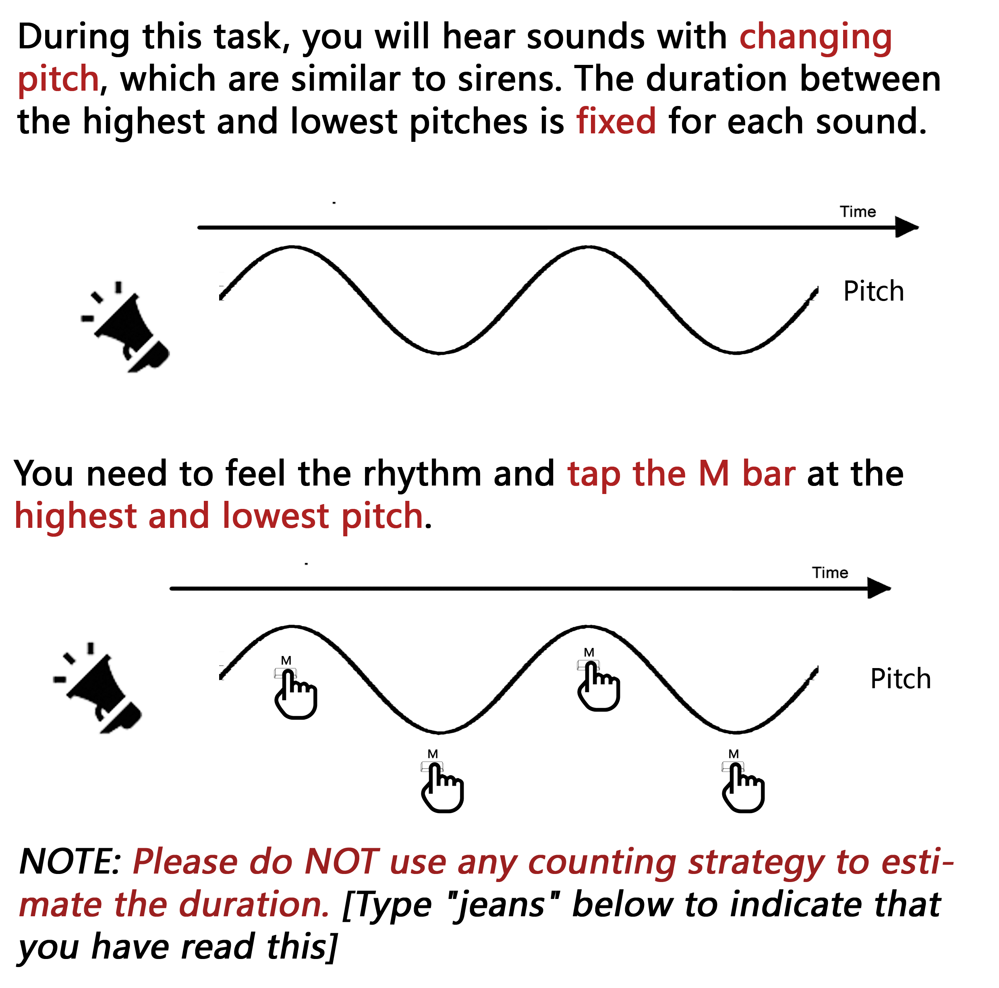
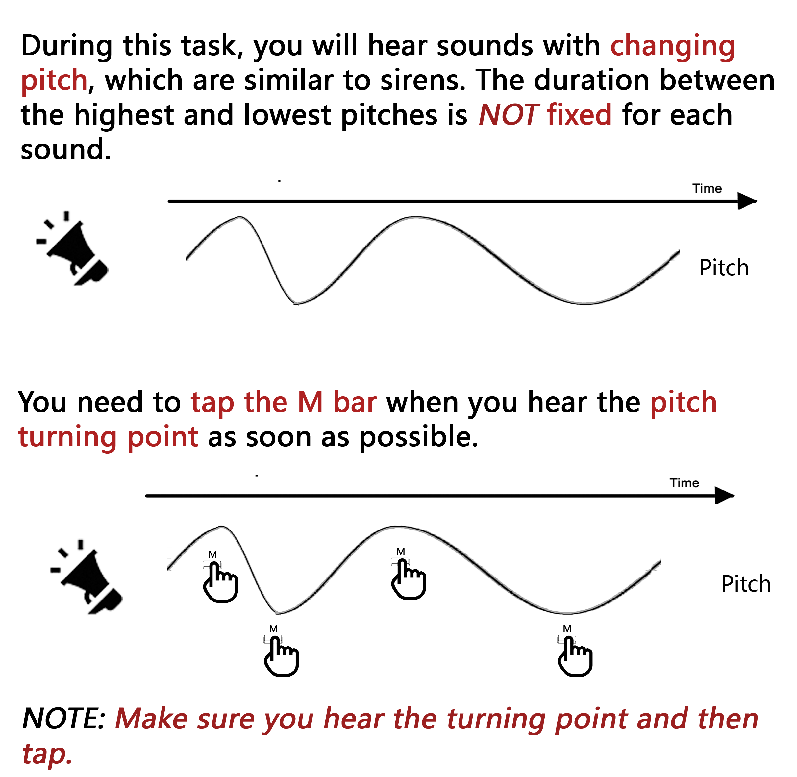
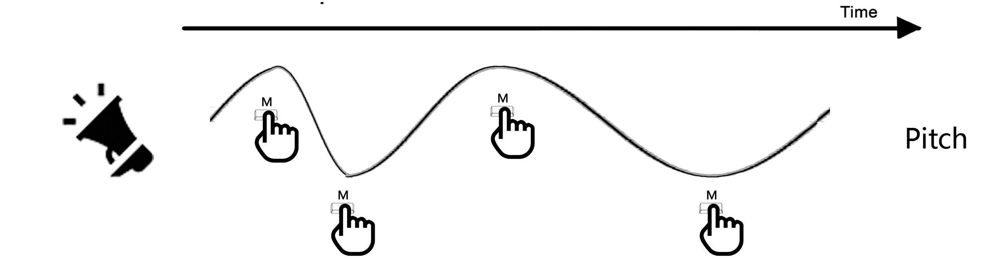

This experiment part contains two tasks:
1). a sensorimotor synchronization task and 2). a reaction task.
Please check the following detailed instruction for each task. NOTE:
There are attention checks, so be sure to read their instructions thoroughly!
Failing these checks will result in an incomplete HIT!
Sensorimotor Synchronization Task

Check the sample video →
Reaction Task

Check the sample video →
What's the code from the instructions (Reread the instructions if you don't know)：
Progress
Reaction Task
When you hear each pitch truning point,
press the M bar as quickly as you can.
There are 4 trials in total. Between each trial, you will get a 5-sec short rest.

Press Enter to start practice
Reaction Task
Press enter to Continue
Synchronization Task
You need to tap along the highest and lowest picth
by pressing the M bar .
There are 20 trials in total. Between each trial, you will get a 5-sec short rest.
Press Enter to start practice
Synchronization Task
Press enter to Continue
Your response have been saved :) Your completion code is: 65BBB4E5.
If you do not receive compensation in 10 business days please email liuyuelin@pku.edu.cn.
Hope you have a wonderful life.
Oh no!
If you are seeing this page it means you did not pass an attention or understanding task.
This task requires your full attention, thus we kindly ask you to exit and return this study.
You can also refresh the page to restart this experiment.
We're sorry for this inconvenience.
Thanks for your participation for this experiment!
Before finishing, we have two questions.
1. For you, taping to
picth is easier.
2. For you, taping to rhythm is easier.
Let us know if you had any issues/comments with this experiment!